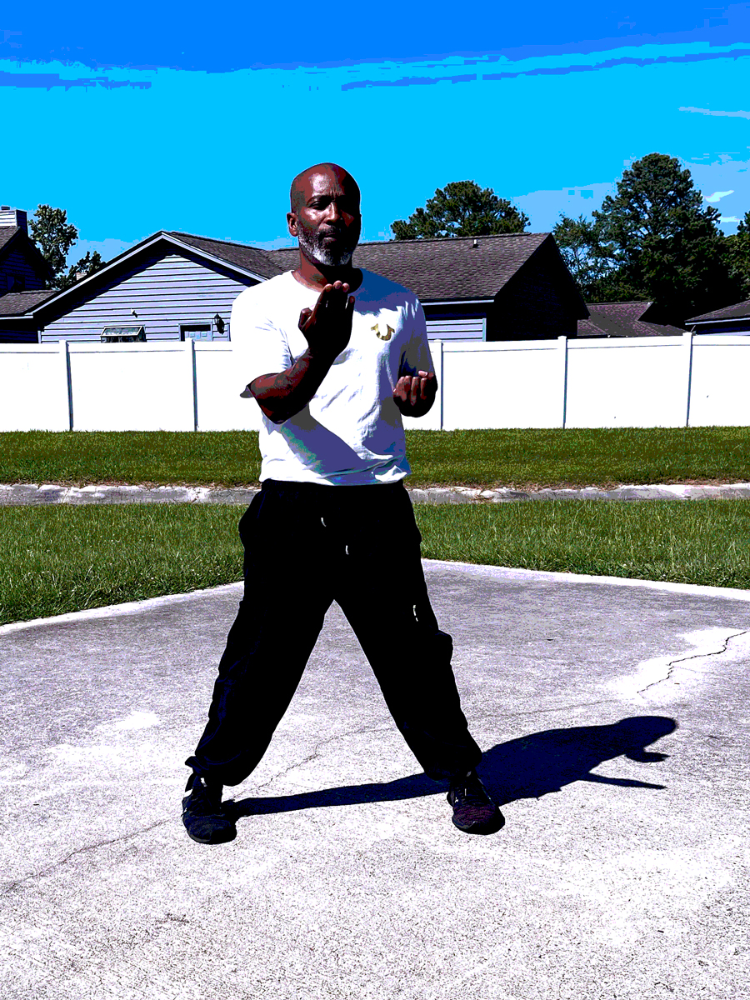

Being a one-man-team for Davis Marketing Solutions LLC, I get little time for my hobbies -- especially now after re-committing myself to learning code, but when I do get the time, my main hobbies are:
Ever since a young age, I've had a love for music and performing arts. I grew up in the 80's (Hip Hop Era) so quite naturally, dancing, rapping and DJing is embedded in the fabric of who I am. Back in the day I was a DJ for a while, then I left it alone and started making beats. I later set up a recording studio and recorded local artists in the Myrtle Beach area. I even produced some of my own music. Though I never cracked the industry with a hit, my first love for the culture still lives within me. I now have a home studio where I continue to do some amateur production. It's another creative outlet for me outside the work I do for my marketing company.
I often see many who are hungry for the potential fame and money that comes with being an entertainer, but for me, it's the exact opposite. I was never hungry for fame --- maybe just a little bit for the money, but never the fame. At the end of the day it's always been about the love of just sparking an idea, losing myself in it and coming out on the other side with that idea manifested into what it's going to be. That is the ultimate reward and fulfillment for me.
Riding My Motorcycle
I have a 2011 Suzuki GSXR1000. It's black, accented in gold and grey, with LED lights to compliment. Riding my bike is one of the most freeing of all my hobbies. I can get on the road and forget about everything, letting the wind blow across my face and body. I love it. Sometimes I'll get on a stretch and just gun it just to get that adrenaline rush. Riding my bike is a wonderful escape.
Ving Tsun Kung FuPronounced Wing Chun, this is a form of kung fu that focuses on a center-line concept for its effectiveness. I studied this martial art back in the early-mid 2000s. I learned the complete system up to the wooden dummy. My Sifu closed his school back in 2006. He continued to meet in remote places with a few of the initial students to finish giving us the system. Afterwards, He closed his hands. Us remaining students eventually stopped meeting to train. After years of no training --- and I've really been missing it, I recently started training my kids from home. It's going well. Ving Tsun is not only self defense, it's a lifestyle.
I'm optimistic about training with my kids, creating a stronger bond with them and giving them something priceless that will last a life-time and even generations, if they keep the journey and pass it down to their descendants. If you're interested in knowing more about Ving Tsun Kung Fu, I'd recommend getting a book entitled Live Life Like a Kung Fu Master by William Moy and Paul Volponi. William Moy, son of Grand Master Moy Yat, is my Sigung, the guy who taught my Sifu.